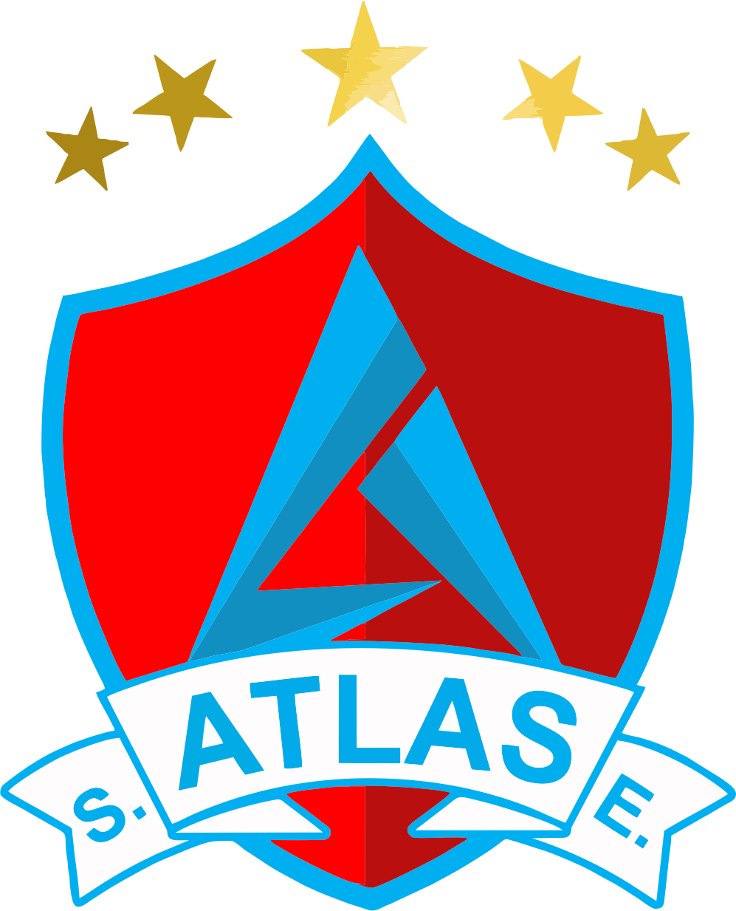
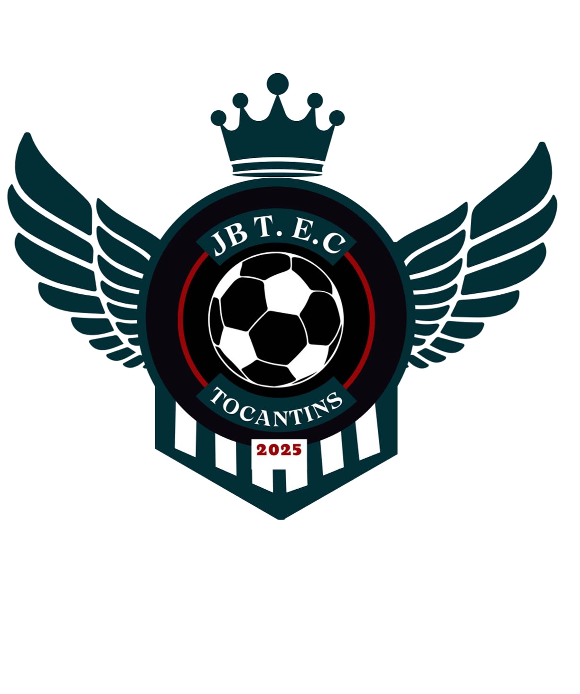

Paraíso do Tocantins · Desde 2015
Nossa história.
Nossa camisa.
Da união de uma família à paixão pelo futebol. Ao fundo, um registro do elenco campeão de 2022 — parte da história que construímos.
Camargo Futebol Clube · Futebol de campo · Society · FutsalAcompanhe jogos e resultados
Dentro das quatro linhas
Jogos e resultados
Próximo confronto
 Camargo FC
Camargo FC
Atlas AGinásio Ercílio Bezerra · 1ª rodada
Ver detalhes na agendaConfronto seguinte
Camargo FC × JB Tocantins
2ª rodada · 13ª Liga Paraíso de Futsal
Ginásio Ercílio Bezerra
Conquistas do Camargo FC
Liga Municipal 2ª Divisão
1
2022
Ver campanha e escalações →
Taça Nova Geração
1
2023
Torneio de Inverno
1
2020
Quadrangulares
4
2017-2019-2020-2021
Noticiário rubro-negro
Últimas histórias
Futebol de campo · Futsal
Nosso elenco
Temporada 2026
Os protagonistas do clube
Confira as posições, os jogos, os gols e a trajetória de cada atleta que representa o Camargo FC.
Ver fichas dos atletas